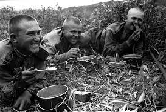
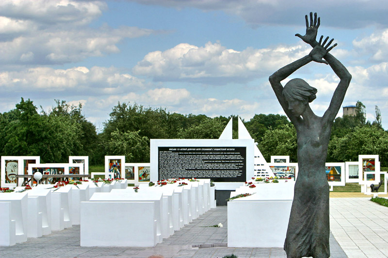

Героизм партизан
Партизанское движение в Беларуси было одним из самых мощных в Европе. Партизанское движение в Белорусской ССР началось с первых дней войны и приобрело массовый характер. Жители оказывали сопротивление немецким оккупантам как в форме саботажа и отказа выполнять требования оккупационных властей, так и через вооружённые акции. Особенно значимую роль играли партизаны и подпольщики. Партизанские отряды активно сражались с врагом: на территории Беларуси действовало более 374 тыс. партизан и свыше 70 тыс. участников подполья. Первый партизанский бой состоялся 28 июня 1941 года под руководством Василия Коржа вблизи Пинска. К концу 1943 года партизаны контролировали около 58,4% оккупированной территории республики. На этих освобождённых землях восстанавливалась советская власть, возрождалась культурная и хозяйственная жизнь. Партизанские зоны становились центрами организации борьбы с оккупантами, где выпускались газеты, работали радиостанции и подпольные типографии, устраивались кинопоказы и велась культурно-просветительная деятельность.

Мирные жители в тылу
Помимо вооружённого сопротивления, мирные жители оказывали огромную поддержку партизанам, снабжая их продовольствием, укрытием и информацией. Белорусское население активно участвовало в борьбе за освобождение своей Родины, даже несмотря на угрозу смертельных наказаний.
Символы мужества и патриотизма
Подвиг белорусского народа — это не только партизанская война, но и сохранение культуры, национального духа и памяти о погибших. Множество памятников и мемориалов, таких как Хатынь, были воздвигнуты в честь жертв и героев войны, чтобы сохранить память о подвиге для будущих поколений.
Сохранение исторической памяти
9 мая в Беларуси ежегодно отмечают один из самых важных праздников в истории страны — День Победы. Для жителей нашей страны это не только праздничный день, но и день памяти, глубокого уважения и благодарности советским воинам, труженикам тыла, партизанам и подпольщикам — всем, кто приближал Победу. Ежегодно в День Победы 9 мая мы приходим к памятникам, чтобы возложить цветы и почтить у Вечного огня память миллионов людей, погибших во время войны, поблагодарить всех павших за наши мирные рассветы. 22 июня в Беларуси в День всенародной памяти жертв Великой Отечественной войны и геноцида белорусского народа память погибших почитают Минутой молчания. По поручению Главы государства в мемориальном комплексе «Хатынь» в 2022 году была проведена масштабная реконструкция. Молодёжь нашей страны не осталась в стороне. По инициативе и просьбе Белорусского республиканского союза молодёжи мемориальному комплексу «Хатынь» как объекту реконструкции был присвоен статус Всебелорусской молодёжной стройки. Принять участие в ней смогли юноши и девушки в возрасте 14–31 года.
>QR-код для задания
Отсканируйте QR-код для выполнения задания по теме "Подвиг белорусского народа":